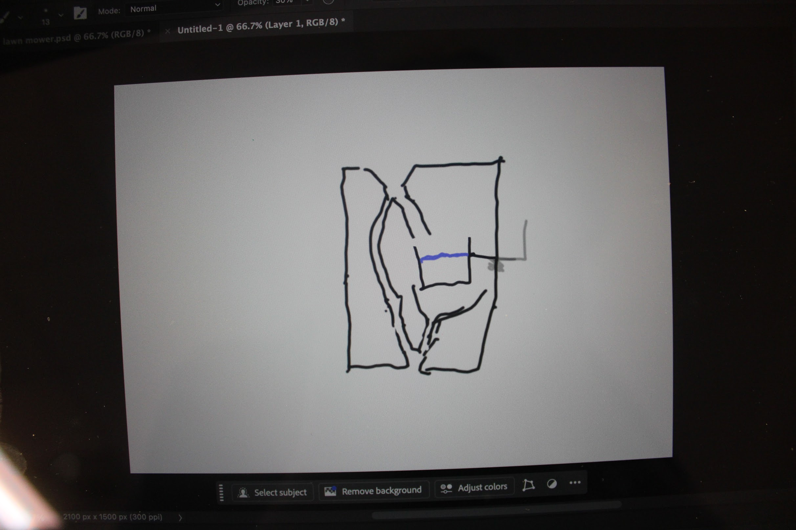

In this project our teacher, Mr. Sinusas presented us with this mysertious "Black Box". Throughout this project we had to test, desgin a model that made sense backed by evidence that proves the contents of the "Black Box". When you poured water into this mysterious Black Box sometimes it would give you back no water at all. Sometimes giving you more than 2x the water you orignally poured. This project required us to test vigourously with multiple variables such as speed, way you poured it in and even stopping half way through just to see if there was any change. These are the steps I took to find out how what was in the Blackbox.
